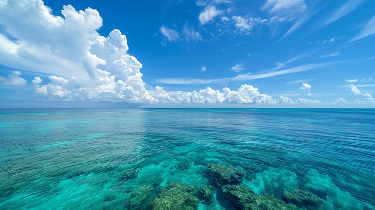

Summer edit · Inspiration
Top 5 summer destinations

Summer is the perfect season to pack your bags, soak up the sun and explore new horizons. Whether you’re looking for beaches, culture or a cool escape, the world has plenty to offer.
1. Santorini, Greece
White-washed houses, blue-domed churches and stunning sunsets over the Aegean Sea make Santorini ideal for romantic getaways and slow travel.
2. Bali, Indonesia
Bali blends golden beaches, serene rice terraces, ancient temples and restorative spa traditions into one unforgettable escape.
3. Amalfi Coast, Italy
Dramatic cliffs, pastel villages and crystal-clear water make the Amalfi Coast a luxurious yet laid-back Mediterranean classic.
4. Kyoto, Japan
For history and culture, Kyoto’s temples, tea houses, gardens and summer festivals offer a quieter side of Japan.
5. Banff, Canada
Turquoise lakes, glaciers and mountain trails make Banff a refreshing summer alternative for adventurous travellers.
Read the full story